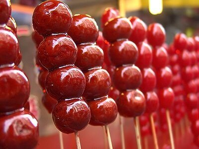
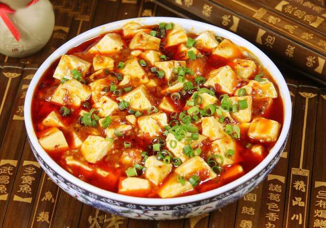
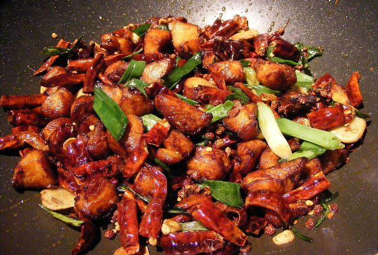
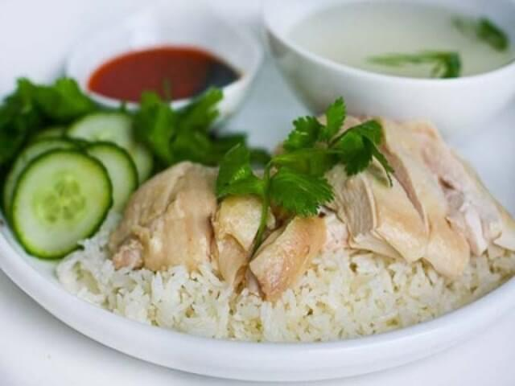
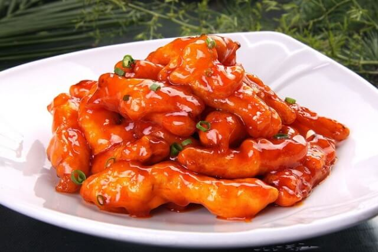
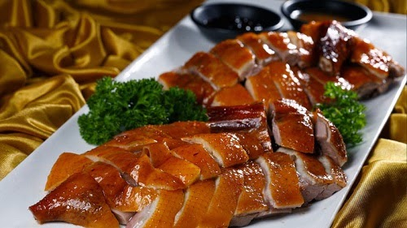
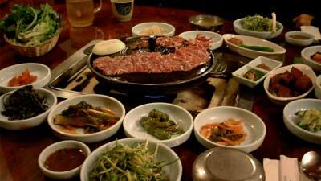
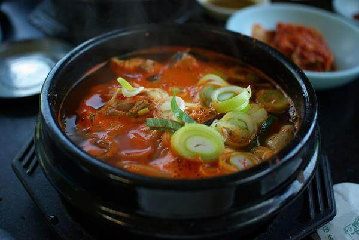
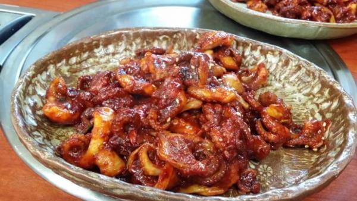
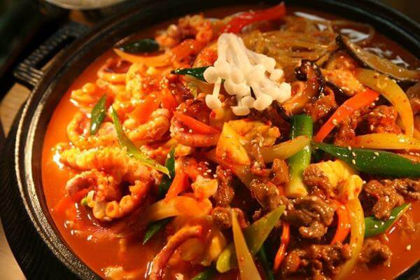

Jajanan Chinesse

Bintang Hulu
Bing Tang Hulu merupakan sebuah permen yang terbuat dari buah-buahan yang di keringkan kemudian pada bagian luarnya di lapisi dengan gula, lambat laun gula yang melapisi buah yang kering tadi mengeras. Biasanya Bing Tang Hulu ini di sajikan seperti halnya sate, makanan yang berasal dari Indonesia. Bing Tang Hulu di tusuk-tusuk menyerupai sate, dan biasanya di jajakan atau di tawarkan pada pedagang kaki lima

Mapo do Ufu
Mapo doufu ini menjadi salah satu hidangan china tradisional yang sangat populer di china menjadi salah satu makanan terfavorit guys. Mapo doufu ini sebenarnya berasal dari provinsi Shincuan dan untuk and ayang belum tau Mapo doufu ini terdiri dari tahu yang di potong dadu lalu di masak dengan campuran daging giling, bubuk cabai, daun bawang, pasta kacang, dan bumbu lainnya yang membuat 1 porsi Mapo doufu ini memiliki rasa yang lembut, gurih, pedas, manis, dan pastinya lezat.

La Ji Zi
La ji zi ini memang menjadi makanan yang sangat hits di china dan la ji zi ini memiliki arti yaitu ayam pedas kering. la ji zi ini terdiri dari potongan daging ayam yang di potong dadu lalu di goreng sampai kering dengan beberapa bumbu yaitu cabai sichuan, cabai kering, bawang putih, daun bawang, kecap, garam, gula, dan bumbu campuran lainnya, untuk rasanya dagingnya empuh bumbunya kerasa, manis, asin, pedas, dan gurih.

Hainan Jifan
nasi hainan itu sebenarnya adalah beras yang di tanak dengan bumbu dan kaldu ayam lalu di masak dan disajikan dengan lauk biasanya ya ayam, kuah, dan kecap. makanan ini sangat nikmat dan pastinya wajib anda coba!!! untuk rasa tidak usah di tanya nasi hainan ini memiliki cita rasa yang gurih akan lebih nikmat jika di makan dengan ayam dan kuah khas untuk nasi hainan guys.

Tangculiji
Tangculiji ini menjadi salah satu makanan tradisional tionghoa dan masakan yang satu ini berasal dari Sichuan dan sudah populer di berbagai restoran-restoran di china bahkan sampai mancanegara. tangculiji ini terdiri dari daging babi yang di fillet di campur dengan tepung lalu di goreng, setelah ditiriskan tangculiji ini di masak dengan saos asam manis, sehingga mencipkan rasa manis, pedas, dan potongan babi goreng tepung ini terasa gurih, akan lebih nikmat jika di makan dengan nasi hangat.

Bebek Peking

Gogigui
Makanan yang satu ini merupakan makanan pilihan yang bisa kalian coba, karena makanan dengan jenis BBQ khas korea ini memiliki rasa yang sangat lezat. Biasanya makanan bernama Gogigui ini di masak dengan panggangan meja. Dalam membuat Gogigui ini, berbagai jenis daging dan sayur di campur dengan saus kemudian di panggang hingga menghasilkan rasa lezat. Gogigui sangat sering di sajikan di restoran-restoran yang ada di korea, jadi dengan mudah kalian bisa menemukan makanan khas korea bernama Gogigui ini.

Haejangguk
Haejangguk (해장국) adalah jenis guk. Pada zaman dahulu, haejangguk dimakan untuk menyadarkan diri dari rasa mabuk akibat minum sul, sehingga dinamakan juga sulguk ("sup minuman keras"). Lama-kelamaan, haejangguk dikenal sebagai hidangan populer di malam hari. Haejangguk tertulis dalam buku masak Dinasti Joseon tahun 1600-an dengan nama seongjutang yang disantap guna menyadarkan orang dari mabuk. Walau berasal dari Joseon, resep aslinya tak diketahui.

Jjukumi
Korea Selatan memang surga bagi para pecinta seafood. Ya, masyarakat di sini sangat kreatif dalam mengolah berbagai bahan laut menjadi sebuah masakan yang sangat lezat. Salah satunya adalah jjukumi, yang terbuat dari gurita berukuran kecil yang dimasak dengan api besar dalam rendaman saus gochugang yang sangat lezat. Saking populernya, di Korea Selatan bahkan ada sebuah lokasi yang diberi nama Jjukumi Street, di mana ada ratusan restoran yang menyajikan masakan ini sebagai menu utama. Tentu saja, tempat ini wajib dikunjungi jika kelak anda berkesempatan mengunjungi Korea Selatan.

Jeongol
Jeongol adalah makanan Korea berupa berbagai sup yang direbus di dalam panci besar, dan dihidangkan di tengah-tengah meja untuk dimakan bersama. Dibandingkan dengan jjigae yang hanya berisi satu jenis bahan utama, bahan untuk isi jeongol biasanya jauh lebih beragam. Berbeda dari jjigae yang bermula dari makanan rakyat, jeongol seperti halnya gujeolpan bermula dari makanan untuk kalangan bangsawan atau anggota keluarga kerajaan.
Terimakasih telah berkunjung :) Jika ada saran dan kritik silahkan tulis dibawah